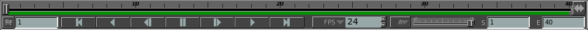

The Timeline

The timeline allows you to control what frame in a sequence or movie is
displayed.
It can be toggled on and off by using the F3 hotkey.
The slider allows you to easily jump around the video sequence being
displayed. When in EDL mode (see EDL), the timeline will also
display each movie sequence as a video segment. The current
video
segment will be highlited.
Timecode
/ Frame Display
The  button refers to the current frame being displayed. Clicking
on
it will toggle between displaying the timeline and frame information as
either frames, time or timecode.
button refers to the current frame being displayed. Clicking
on
it will toggle between displaying the timeline and frame information as
either frames, time or timecode.
Playback
Controls

The playback controls function very similarly to those in your VCR or
Stereo. They allow you to, from left to right: go to the
beginning of the movie, play the movie backwards, go back a single
frame, pause the playback, go forwards one frame, play the movie
forwards and go to the end of the movie.
Unlike your VCR, there is no fast-forward or rewinding controls.
That functionality can be obtained by changing the frame rate
and
then playing the movie.
If you play a sequence of images, playback will not be smooth at first.
mrViewer will first try to cache all the images in memory
before
playback. If you run out of memory or you start swapping, you
might not be able to play back the sequence smoothly.
Smooth reverse playback of movie files is largely dependant on
the codec used in the movie file and movies without audio or with audio turned off work much better.
Playback
Speed (FPS)

The FPS (Frames per Second) control allows you to adjust the speed of
playback. This allows you to play the sequence in slow
motion or
at several times its normal speed.
Audio
Control (Volume)

The audio control can be used to switch between different audio tracks
by clicking on the A button.
In addition, the audio volume can be controlled with the
slider
next to it. Note that, depending on your platform, changing
the
volume may effect all other applications that use sound.
Timeline Limits
Finally, the S
and E inputs
allow you to change the start and end of the timeline. This
has
no effect on changing the actual length of the movie or image sequence,
and is only provided for playback looping and display purposes.